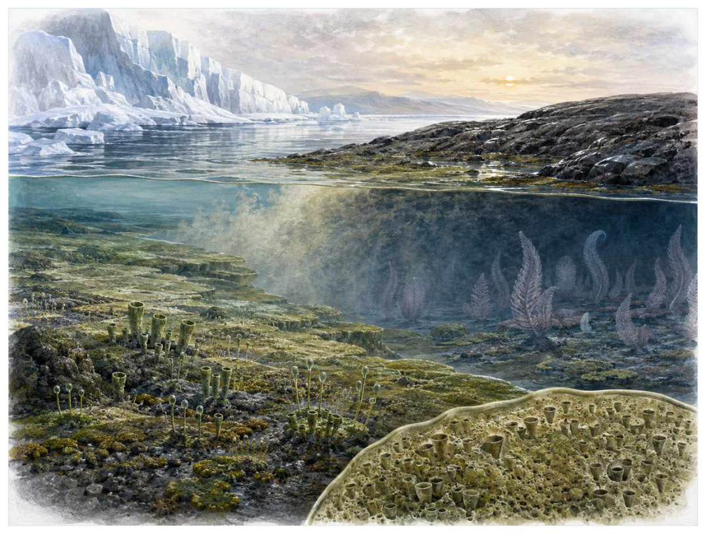

第03篇 · 埃迪卡拉纪：陌生的复杂生命 · 第 7 章
雪球之后：复杂生命的环境门槛
本篇主题:埃迪卡拉纪：陌生的复杂生命
在动物身体方案尚未定型之前，海底出现的巨大而难以分类的生命。

本章科学复原配图 （用于呈现结构与生态关系, 不替代化石照片、测量数据与系统发育证据。）
把时间拨到约7.2亿至5.75亿年前。这一章不只列出当时的生物，而要追问环境、能量和生态关系怎样共同塑造身体。新元古代经历多次极端冰期。冰盖范围、海洋是否完全冻结仍有争论，但全球风化、海洋分层和营养盐输入显著改变。冰期结束后的融水、碳循环扰动和氧化事件，为藻类、异养真核生物和早期动物提供了新的生态背景。环境变化不是动物出现的单一开关，却改变了限制条件。
进入这个时代
若真正置身其中，首先感受到的是介质本身：水是否含氧、地面是否稳定、空气是否干燥、植被是否遮挡视线。身体结构只有放在这些条件中才有意义。从冰期后的海岸看，海洋可能浑浊而富含陆源营养。表层光合生产增强，深水仍可能缺氧。氧不是全球均匀的背景值，而是在海盆、季节和水深之间形成可扩张又会收缩的适生窗口。
在“雪球之后：复杂生命的环境门槛”所覆盖的时间里，不能把地理与气候当作固定背景。海陆位置、海平面、河流或植被结构会改变资源可达性，同一性状在不同地区可能得到完全相反的选择结果。
以雪球之后：复杂生命的环境门槛为例，化石记录偏爱硬组织、快速埋藏和容易出露的岩层。一次“首次出现”通常只是目前所知的最早记录，一次“突然消失”也需要排除保存窗口关闭。年代、形态和环境证据必须一起解释。 在本章中，这一约束具体落在“藻类生产增加颗粒有机物和更高质量食物”这条关系上。
再从约7.2亿至5.75亿年前的时间尺度看，物种数量并不等于生态功能。一个群落即使仍有许多物种，只要初级生产、授粉、礁体建造或大型植食等关键功能消失，食物网也会表现为深度崩溃。反过来，少数机会型物种高丰度并不代表系统已经恢复。它与“大型藻类”共同决定了后续变化可以沿哪些路径发生。
生态系统如何运转
本章的一条关键关系是“藻类生产增加颗粒有机物和更高质量食物”。它首先改变资源在个体之间的分配：能更早发现、处理或占据资源的种群获得收益，而另一方会承受新的选择压力。
围绕“藻类生产增加颗粒有机物和更高质量食物”，这种关系没有永恒赢家。收益随密度和环境改变：防御越常见，攻击专门化的价值越高；资源越稀少，维持昂贵结构的代价越大。化石记录中的扩张与衰退，常是这种动态平衡被外部事件打破的结果。 对雪球之后：复杂生命的环境门槛而言，这一后果还会与“氧化与缺氧水团交替筛选耐受不同环境的生物”相互放大或抵消。
“氧化与缺氧水团交替筛选耐受不同环境的生物”体现了生态系统的反馈性。一方结构或行为稍有改变，另一方的防御、逃避、繁殖和空间选择就会重新排列，长期累积后才形成宏观演化差异。
围绕“氧化与缺氧水团交替筛选耐受不同环境的生物”，它的长期后果通常通过幼体和繁殖体现。成年个体即使能抵抗一次危机，只要巢址、配子、幼体食物或成长季节被破坏，种群仍会在数代内下降。 对雪球之后：复杂生命的环境门槛而言，这一后果还会与“沉积物表面的微生物席仍控制底栖生态”相互放大或抵消。
在约7.2亿至5.75亿年前，“沉积物表面的微生物席仍控制底栖生态”把环境条件转化为生物之间的差异。相同气候并不会平均影响所有支系，因为它们利用的食物、水层、底质和繁殖地点并不相同。
围绕“沉积物表面的微生物席仍控制底栖生态”，还要考虑空间异质性。一项在浅海、河谷或林冠有效的策略，移到深水、干旱内陆或开阔地便可能失去优势。因此同一支系常出现区域性扩张，而不是全球同步取代。 对雪球之后：复杂生命的环境门槛而言，这一后果还会与“藻类生产增加颗粒有机物和更高质量食物”相互放大或抵消。
关键演化创新
在“雪球之后：复杂生命的环境门槛”中，围绕“大型藻类”，“大型藻类”是本章的重要演化创新。创新并不等于某一代突然长出完整器官，它通常由旧结构的尺寸、连接、材料和表达时序逐步变化，并在每个中间阶段承担可用功能。 它首先需要在约7.2亿至5.75亿年前的生态条件下产生可测量收益。
就“大型藻类”而言，研究者通过近缘支系比较、发育同源、关节活动、微观组织和出现顺序重建这条路径。真正有价值的过渡化石不是“半成品”，而是证明中间组合可以独立生活。 本章把它与“动物胚胎发育网络的前置演化”并列，是为了显示复杂性状往往依赖多部分协同。
在“雪球之后：复杂生命的环境门槛”中，围绕“动物胚胎发育网络的前置演化”，这一结构的历史应按性状拆开。支撑、感觉、供能和控制往往不是同时成熟，化石会显示镶嵌状态：某一部分已接近后来的形态，其他部分仍保留祖征。 它首先需要在约7.2亿至5.75亿年前的生态条件下产生可测量收益。
就“动物胚胎发育网络的前置演化”而言，它的成功具有条件性。环境稳定时，专门化可提高效率；危机到来时，同一专门化可能限制食物和栖息地选择。演化创新因此既能开启辐射，也能制造新的脆弱性。 本章把它与“环境氧化窗口”并列，是为了显示复杂性状往往依赖多部分协同。
在“雪球之后：复杂生命的环境门槛”中，围绕“环境氧化窗口”，“环境氧化窗口”是本章的重要演化创新。创新并不等于某一代突然长出完整器官，它通常由旧结构的尺寸、连接、材料和表达时序逐步变化，并在每个中间阶段承担可用功能。 它首先需要在约7.2亿至5.75亿年前的生态条件下产生可测量收益。
就“环境氧化窗口”而言，这一变化还可能在多个支系中独立发生。若功能相似而解剖来源不同，就是趋同；若结构来自共同祖先但功能改变，则属于同源结构的分化。二者不能仅靠外观判断。 本章把它与“大型藻类”并列，是为了显示复杂性状往往依赖多部分协同。
生命群像：把物种放回生态网络
楚阿尔管状化石（Tawuia dalensis）
在约10亿至7亿年前，楚阿尔管状化石（Tawuia dalensis）以约厘米级管状或囊状的身体参与食物网。它不是孤立的“明星生物”，而是浅海底栖大型真核生物；显示宏观体型在动物之前已多次出现决定它能利用哪些资源，也决定必须承担哪些成本。
对楚阿尔管状化石而言，同域物种的存在迫使它分割时间与空间。相似牙齿不一定吃完全相同的食物，相似四肢也可能适应不同底质；微磨损、同位素和伴生群落常能揭示这种细分。环境改变时，原本减少竞争的专门化又可能成为迁移和改食的障碍。 这使“显示宏观体型在动物之前已多次出现”不能脱离其浅海底栖大型真核生物角色来理解。
证据核心是可能包含不同生物或保存状态，系统位置不确定。化石记录更擅长回答“结构是什么”，较难回答“每天怎样行动”。足迹、胃内容物、咬痕或胚胎若存在，会显著缩小推测范围；若只有零散骨骼，行为叙述就必须更克制。
由楚阿尔管状化石这个案例看，它所代表的身体方案后来可能消失，也可能被远亲以不同材料重新发明。生命史因此既有可重复的功能解，也有不可复制的谱系路径。两者结合，才解释现代生物为何既熟悉又偶然。 它在约10亿至7亿年前留下的记录，因此同时是第7章所讨论的形态史和生态史的一部分。
奥陶? 新元古代藻类（Arctacellularia and other vase-shaped microfossils）
认识奥陶? 新元古代藻类（Arctacellularia and other vase-shaped microfossils）要先放弃静态骨架印象。它生活在新元古代，约微米至毫米级，日常任务是作为水体或沉积物表面的真核生物维持能量与繁殖。复杂壁结构显示真核多样性增加只是这一整套生活史中最容易化石化的部分。
对奥陶? 新元古代藻类而言，它的成功不需要在所有性能上压倒其他物种，只需在特定资源和风险组合中留下更多后代。速度、咬合、装甲、感官与繁殖之间存在预算，某项性能极端化往往意味着另一项被牺牲。所谓“霸主”只是复杂权衡后的区域性结果。 这使“复杂壁结构显示真核多样性增加”不能脱离其水体或沉积物表面的真核生物角色来理解。
判断它的生活方式时，研究者首先使用形态类群可能混合多个亲缘支系。随后会检验替代解释：同样的牙是否也能处理其他食物，同样的骨骼比例是否由年龄造成，同一骨层是否来自群体生活还是灾难性聚集。排除过程比贴标签更重要。
由奥陶? 新元古代藻类这个案例看，过去的复原常受完整现代动物模板影响，新材料则迫使研究者接受更陌生的身体比例或生活方式。最稳妥的表达是保留估计区间，并明确哪些软组织、颜色和社会行为仍属合理推测。 它在新元古代留下的记录，因此同时是第7章所讨论的形态史和生态史的一部分。
花瓶状微化石（vase-shaped microfossils）
花瓶状微化石（vase-shaped microfossils）生活在约8亿年前，已知体型约为百微米级。它在群落中的角色可概括为可能为有壳变形虫。最值得观察的结构是壳体开口和形态差异显示捕食性真核生物早已多样化。这些结构不是为了后来时代而准备，而是在当时直接影响摄食、运动、防御或繁殖。
对花瓶状微化石而言，从种群角度看，偶发捕猎和个体伤病远不如长期繁殖率重要。广泛分布的普通个体比一具异常巨大的标本更能代表支系，然而普通个体往往较少进入公众叙事。研究者必须防止把化石收藏偏好误当成古代丰度。 这使“壳体开口和形态差异显示捕食性真核生物早已多样化”不能脱离其可能为有壳变形虫角色来理解。
关于它的直接依据是：软体部分不保存，亲缘主要依据壳形和现代类比。研究者还必须确认骨骼是否属于同一个体、是否被水流搬运、压扁是否改变比例，以及不同大小是否只是成长阶段。只有解剖、地层和功能证据相互一致，复原才可上调为高可信。
由花瓶状微化石这个案例看，它在生命史中的价值不在于离现代形态还有多远，而在于证明这一身体组合曾真实可行。即使没有直系后代，支系也可能在当时持续繁盛，并通过捕食、植食或栖息地工程改变其他生命的选择环境。 它在约8亿年前留下的记录，因此同时是第7章所讨论的形态史和生态史的一部分。
阿瓦隆大型生物（Avalon assemblage organisms）
在这一章的生命群像里，阿瓦隆大型生物（Avalon assemblage organisms）不能只当作图鉴名称。它出现于约5.75亿至5.6亿年前，体型大约厘米至米级，主要生活方式是深水海底附着群落；叶状和分形身体在动物大辐射前建立高出海底的生活方式则说明身体怎样围绕这一生活方式进行组合。
对阿瓦隆大型生物而言，把它放回群落后，结构的意义更清楚。食物并不会平均分布，水深、植被高度、底质和季节把资源切成小块；它的身体让其中一部分资源可被利用，也使它与近缘种错开生态位。种群命运还取决于幼体能否成长、繁殖地点是否稳定以及灾害后是否仍有避难所。 这使“叶状和分形身体在动物大辐射前建立高出海底的生活方式”不能脱离其深水海底附着群落角色来理解。
现有认识建立在许多类群与现代动物的对应关系不清楚之上。古生物学的可信度不是来自一件戏剧化标本，而是来自多件标本、多个地点和不同方法得到相容结果。新发现若改变比例或分类，并非此前研究毫无价值，而是证据边界被重新画清。
由阿瓦隆大型生物这个案例看，从生态尺度看，它与本章其他成员共同维持一张网络。任何“最强”排名都会遗漏资源供应、幼体死亡、疾病和气候脉冲；真正决定长期成功的是种群能否在波动中不断完成繁殖。 它在约5.75亿至5.6亿年前留下的记录，因此同时是第7章所讨论的形态史和生态史的一部分。
Cloudina的前期管状生物（pre-Cloudina tubular organisms）
从外形看，Cloudina的前期管状生物（pre-Cloudina tubular organisms）最容易被记住的是管状身体预示更强的定向生长与可能的防护。它生活在埃迪卡拉纪早中期，大小约毫米至厘米级，承担沉积表面或浅埋生活这一生态功能。把年代、体型和功能放在一起，才能避免把奇特形态当成无意义装饰。
对Cloudina的前期管状生物而言，同域物种的存在迫使它分割时间与空间。相似牙齿不一定吃完全相同的食物，相似四肢也可能适应不同底质；微磨损、同位素和伴生群落常能揭示这种细分。环境改变时，原本减少竞争的专门化又可能成为迁移和改食的障碍。 这使“管状身体预示更强的定向生长与可能的防护”不能脱离其沉积表面或浅埋生活角色来理解。
支持该解释的材料包括不同产地的管状化石可能并非同一支系。若不同证据出现冲突，应优先报告范围而不是强行给出单值。例如体长会随参照类群变化，运动能力会随软组织假设变化，系统位置也会随新增性状重新计算。
由Cloudina的前期管状生物这个案例看，它也展示专门化的双面性：结构在稳定环境中提高效率，却可能在气候、食物或竞争格局突变时限制转向。灭绝不是对设计的道德评分，而是性状、地理范围和偶然事件相遇后的历史结果。 它在埃迪卡拉纪早中期留下的记录，因此同时是第7章所讨论的形态史和生态史的一部分。
因果链：环境、生态与性状
亲缘关系为功能解释设定边界。“环境氧化窗口”若在近缘支系中以不同程度出现，最简解释通常是祖先已具备部分结构，后代分别强化或丢失；若远亲在相似生态位中出现相近功能，则需要检查内部解剖是否来自不同材料。楚阿尔管状化石与花瓶状微化石可用于演示这一区分：外形近似不自动证明近缘，外形差异也不否定深层同源。把系统发育树、年代和生态证据叠在一起，才能判断雪球之后：复杂生命的环境门槛中的相似究竟来自共同继承、趋同还是保留的原始特征。
从资源入口看，“藻类生产增加颗粒有机物和更高质量食物”决定能量首先由谁获得，而“氧化与缺氧水团交替筛选耐受不同环境的生物”决定能量随后怎样在群落中转移。只有当个体能够借助“大型藻类”把资源转化为生长或后代时，形态优势才会成为种群优势。楚阿尔管状化石与奥陶? 新元古代藻类分别展示了这条链上的不同位置：前者的显示宏观体型在动物之前已多次出现使其偏向浅海底栖大型真核生物，后者的复杂壁结构显示真核多样性增加则服务于水体或沉积物表面的真核生物。这并不意味着二者必然直接竞争；更常见的情况是，它们通过共享资源、改变栖息地或影响共同捕食者而间接连接。把这种间接作用纳入，才看得见雪球之后：复杂生命的环境门槛不是物种名单，而是一张持续重新分配能量的网络。
“沉积物表面的微生物席仍控制底栖生态”说明环境不是在所有个体身上平均施力。若一个种群分布广、世代较短或能使用多种资源，它可能把一次局部危机吸收到地理和生活史差异之中；若另一个种群依赖狭窄水深、单一植物或特定繁殖场，平时高效的专门化就可能在变化中放大风险。奥陶? 新元古代藻类和花瓶状微化石的差异可以用来提出这种比较，但不能仅凭外形宣布谁更适应。真正需要的是地层连续性、地区分布、年龄结构和伴生群落共同告诉我们，哪些性状在雪球之后：复杂生命的环境门槛的具体条件下转化成了更稳定的繁殖。
如果把雪球之后：复杂生命的环境门槛当作一次自然实验，可以追问：假如“藻类生产增加颗粒有机物和更高质量食物”较弱，“动物胚胎发育网络的前置演化”是否仍会带来同样收益；假如“氧化与缺氧水团交替筛选耐受不同环境的生物”更强，楚阿尔管状化石的显示宏观体型在动物之前已多次出现是否反而成为负担。反事实无法直接验证，却能帮助研究者识别模型隐含的因果假设。随后再用冰川沉积、帽碳酸盐和碳同位素记录气候剧变和甾烷等分子化石帮助追踪真核藻类寻找可区分的预测：不同机制应在体型分布、损伤类型、沉积环境或出现顺序上留下不同痕迹。科学解释不是为现有图景编一个顺耳故事，而是让相互竞争的解释接受同一批材料检验。
“藻类生产增加颗粒有机物和更高质量食物”与“沉积物表面的微生物席仍控制底栖生态”之间常存在反馈。一个支系改变沉积、植被或猎物数量后，环境会对其自身和其他支系产生新的选择压力；短期收益可能导致长期资源下降，局部工程行为也可能创造此前不存在的栖息地。楚阿尔管状化石作为浅海底栖大型真核生物，花瓶状微化石作为可能为有壳变形虫，即使从不直接相遇，也可能经由这种环境改造联系起来。生态系统因此不是静态背景上的竞赛场，而是参与者不断修改规则的动态结构；这正是解释雪球之后：复杂生命的环境门槛为何会留下长期后果的关键。
时代横截面：个体、种群与证据
把楚阿尔管状化石与奥陶? 新元古代藻类并排观察，可以看到同一时代并不存在唯一正确的身体方案。楚阿尔管状化石以显示宏观体型在动物之前已多次出现参与浅海底栖大型真核生物，奥陶? 新元古代藻类则依靠复杂壁结构显示真核多样性增加承担水体或沉积物表面的真核生物；两者可能在食物尺寸、活动空间或时间上错开，从而降低直接竞争。若环境改变使这些维度重新重叠，原先共存的支系才可能发生更强替代。比较的目的不是判断谁更先进，而是识别每套结构在哪些条件下有效、在哪些条件下暴露成本。
尺度转换是雪球之后：复杂生命的环境门槛最容易被忽略的问题。楚阿尔管状化石的一次摄食、一次移动或一次繁殖属于分钟到季节尺度；种群扩张需要数百至数万年；“大型藻类”在演化树上的固定则可能跨越更久。短期观察能够说明结构怎样工作，却不能单独解释支系为何在约7.2亿至5.75亿年前扩张。反之，宏观多样性曲线能显示替换，却不能指出每次选择发生在什么身体和生活阶段。把尺度接起来，因果链才完整。
从失败的替代解释出发，能够看见研究如何推进。若把楚阿尔管状化石简单解释为浅海底栖大型真核生物，就应检查其显示宏观体型在动物之前已多次出现是否真的适合该功能；若另一种功能同样可行，再看磨损、同位素、沉积环境或共存生物能否区分。奥陶? 新元古代藻类与花瓶状微化石提供了比较基线，帮助判断某一结构是普遍祖征、特殊适应还是成长阶段差异。结论不是从外观直觉跳出，而是在一系列被排除的可能性之后留下。
本章还可以作为灭绝选择性的预演。若危机首先削弱“藻类生产增加颗粒有机物和更高质量食物”，依赖该环节的楚阿尔管状化石可能比外形更脆弱但食物广泛的奥陶? 新元古代藻类更早衰退；若危机破坏的是繁殖场或幼体环境，成年体型和武器几乎不能提供保护。分布范围、成熟速度、休眠能力与食谱因此要和显示宏观体型在动物之前已多次出现、复杂壁结构显示真核多样性增加等显眼结构一起评估。危机筛选的是整套生活史，而不是单项竞技能力。
从保存角度看，楚阿尔管状化石和奥陶? 新元古代藻类也可能被化石记录不公平地对待。楚阿尔管状化石的显示宏观体型在动物之前已多次出现若包含坚硬、容易辨认的部分，就更可能被采集和命名；奥陶? 新元古代藻类若身体柔软、个体小或生活在侵蚀环境，真实丰度可能被严重低估。冰川沉积、帽碳酸盐和碳同位素记录气候剧变能补充一部分信息，甾烷等分子化石帮助追踪真核藻类又提供另一尺度的限制。只有先问“什么容易被保存”，再问“什么当时常见”，才不会把博物馆展柜的比例误当成古生态比例。
科学家为什么这样判断
证据条目“冰川沉积、帽碳酸盐和碳同位素记录气候剧变”的作用，是把肉眼可见的化石转化为可检验结论。研究者先确认样品的层位和成岩历史，再测量结构、比较近缘种并建立替代模型；若解释只在一套参数下成立，就不能写成唯一事实。
使用“甾烷等分子化石帮助追踪真核藻类”时必须处理保存偏差。坚硬组织、低氧埋藏和火山灰覆盖更容易留下记录，岩层出露与采集历史又决定样本数量。统计分析通常要校正这些不均匀性，避免把采样强度当作真实多样性。
围绕“微量元素和铁组分分析重建局部氧化程度”，高可信结论通常来自独立方法一致。例如形态暗示某种食性时，微磨损、同位素或胃内容物若给出相同方向，解释便更稳固；若结果冲突，就应保留生态弹性或地区差异。
在“雪球之后：复杂生命的环境门槛”这一问题上，把上述方法合在一起，研究者才能从残缺材料走向受约束的复原。任何一条证据都可能受到成岩、污染、样本量或现代类比的限制；结论越具体，越需要多条独立证据指向同一方向，并与约7.2亿至5.75亿年前的地层背景相容。
过去的图景与今天的证据
‘雪球地球导致动物出现’过于线性。冰期可能带来选择压力和营养重组，也可能造成生态破坏；动物起源还涉及基因调控、细胞黏附、捕食和保存偏差。
围绕“雪球之后：复杂生命的环境门槛”，这里的争论并非一方相信科学、另一方拒绝科学，而是不同材料对模型的约束力度不同。旧结论可能建立在少量标本或错误现代类比上，新技术增加性状后会改变最合理解释。修正是研究正常运行的结果。
对约7.2亿至5.75亿年前的材料而言，旧复原并不总是彻底错误。它可能正确抓住亲缘或基本功能，却在姿势、比例和生态上被新标本修订。比较“过去认为”和“现在更支持”，能看见证据如何逐层替换想象。
跨尺度观察
能量账本：任何大型身体、快速运动或高代谢都必须由初级生产支撑。食物从生产者进入消费者时会损失大量能量，因此顶级捕食者种群必然远少于猎物。环境变化若先削弱生产端，高营养级通常最早出现繁殖失败；这比单次搏斗更能决定支系命运。在“雪球之后：复杂生命的环境门槛”中，这一尺度具体连接了“藻类生产增加颗粒有机物和更高质量食物”与“大型藻类”，因而不能只从单个成年标本判断。
偶然与必然：流体力学、材料强度和能量转换使某些功能解反复出现，显示演化有可预测部分；但由哪一支系先获得变异、谁恰好位于避难地，又带有不可复制的历史偶然。现代世界是二者叠加的结果。 在“雪球之后：复杂生命的环境门槛”中，这一尺度具体连接了“氧化与缺氧水团交替筛选耐受不同环境的生物”与“动物胚胎发育网络的前置演化”，因而不能只从单个成年标本判断。
证据等级：地层年代和硬组织形态通常最强，食性若有多种独立线索可达主流解释，颜色、群居、求偶和叫声则常停留在合理推测。把等级写清并不会破坏画面，反而让读者知道想象可以走到哪里。 在“雪球之后：复杂生命的环境门槛”中，这一尺度具体连接了“沉积物表面的微生物席仍控制底栖生态”与“环境氧化窗口”，因而不能只从单个成年标本判断。
通向下一个时代
从本章走向下一阶段时，需要保留的不是一串物种名，而是一个因果链：环境改变可用能量与栖息地，生态关系筛选性状，性状又反过来改造环境。在这些波动海洋中，第一批大型复杂生物留下了化石。它们并不像缩小版现代动物，而更像一次身体组织方式的大规模实验。
本章精选来源
- [R20] Carlisle, E. et al. Ediacaran origin and Ediacaran-Cambrian diversification of metazoans. Science Advances 10, eadp7161 (2024).
- [R21] Bowyer, F. T. et al. Sea-level controls on Ediacaran-Cambrian animal radiations. Science Advances 10, eado6462 (2024).
- [R22] Bobrovskiy, I. et al. Ancient steroids establish the Ediacaran fossil Dickinsonia as one of the earliest animals. Science 361, 1246-1249 (2018).
- [R23] Fedonkin, M. A. et al. The Rise of Animals: Evolution and Diversification of the Kingdom Animalia. Johns Hopkins University Press, 2007.
- [R24] Darroch, S. A. F. et al. A mixed Ediacaran-metazoan assemblage from the Zaris Sub-basin, Namibia. Palaeogeography, Palaeoclimatology, Palaeoecology 459, 198-208 (2016).